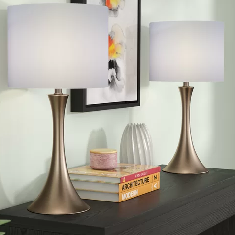
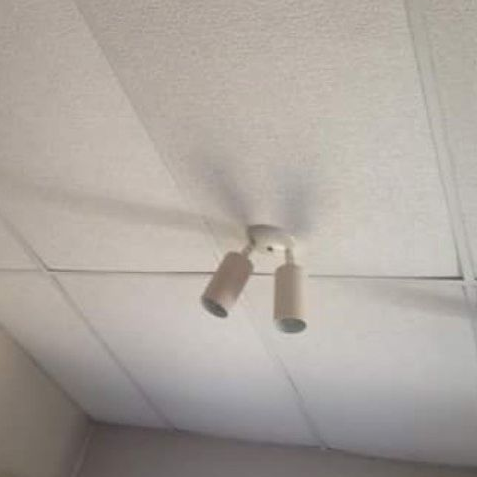

Ceiling Lights VS Lamps
Hello everybody, I'm here yet again, to put an end to the Ceiling lights VS Lamps debate that plagues your every waking moment.In order to help you form opinions, I will non-biasly be going over the pros and cons of each. I will go over in thorough detail what makes a lamp great, and what makes a ceiling light bad.
Lamps
The Choice of Kings

Pros
- Portability: Able to maneuver it around for optimal lighting
- Easy Repair: Just take the cover off and screw in a new bulb.
- It's not a ceiling light
- Easy Installation: Easier to install than a ceiling light.
- Aesthetics: Easy to match to your home decor
Cons
- Cords: Constrained by cord length, and wires can be obstrusive at times
- Someone could screw it to the ceiling and it would technically be a ceiling light.
- The second thing again.
- Higher likelihood of breaking
Ceiling Lights

Pros
- Looks: No outside wires
- Better Lighting: The more higher up the light, the more light it better spread
Cons
- Hard to install
- Hard to put a new light bulb in
- Higher likelihood of burning down the house. Once the fire gets in your walls, there's no way of getting it out.
- It's a ceiling light, does more need to be said?
Article created for Scott Lamp